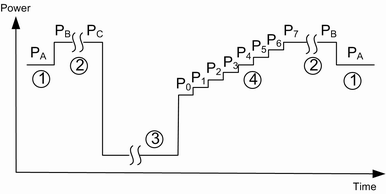

The TPC test step uplink compressed mode (UL CM) activates the TPC pattern for CM test cases.
The R&S CMW measures the UE power according to the selected CM pattern, see "Pattern Type". The UE is commanded to operate in compressed mode using one of the compressed mode patterns A or B. During the test, the UE is commanded to use TPC power control algorithm 1 and step size 2 dB for pattern A and step size 1 dB for pattern B. The TPC patterns induce a UE power ramp of the following shape:

This measurement includes a limit check for each step.
As a precondition before a pattern execution, the UE output power must be set within the ranges specified in standard, see table below.
CM pattern | Initial UE output power PA | TPC commands specified in 3GPP TS 34.121, ... |
|---|---|---|
Pattern A (rising TPC) | -36 ± 9 dBm | table 5.7.6 |
Pattern A (falling TPC) | 2 ± 9 dBm | table 5.7.7 |
Pattern B | -10 ± 9 dBm | table 5.7.8 |
To simplify the settings, perform the TPC measurement in combined signal path, using preconditions and the UL CM trigger of the WCDMA signaling application.